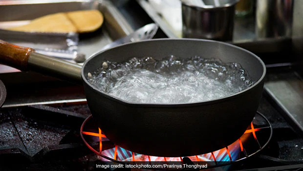

<h1>Hot Water</h1>
<h3>Water that has increased in temperature</h3>
    <p>This is great for tea and grits I think.</p>
    <h4>Ingridients</h4>
    <ul>
        <li>Water</li>
        <li>Pot</li>
        <li>Fire</li>
    </ul>
    <h4>steps</h4>
    <ol>
        <li>get pot</li>
        <li>put water in pot</li>
        <li>put pot on fire</li>
    </ol>